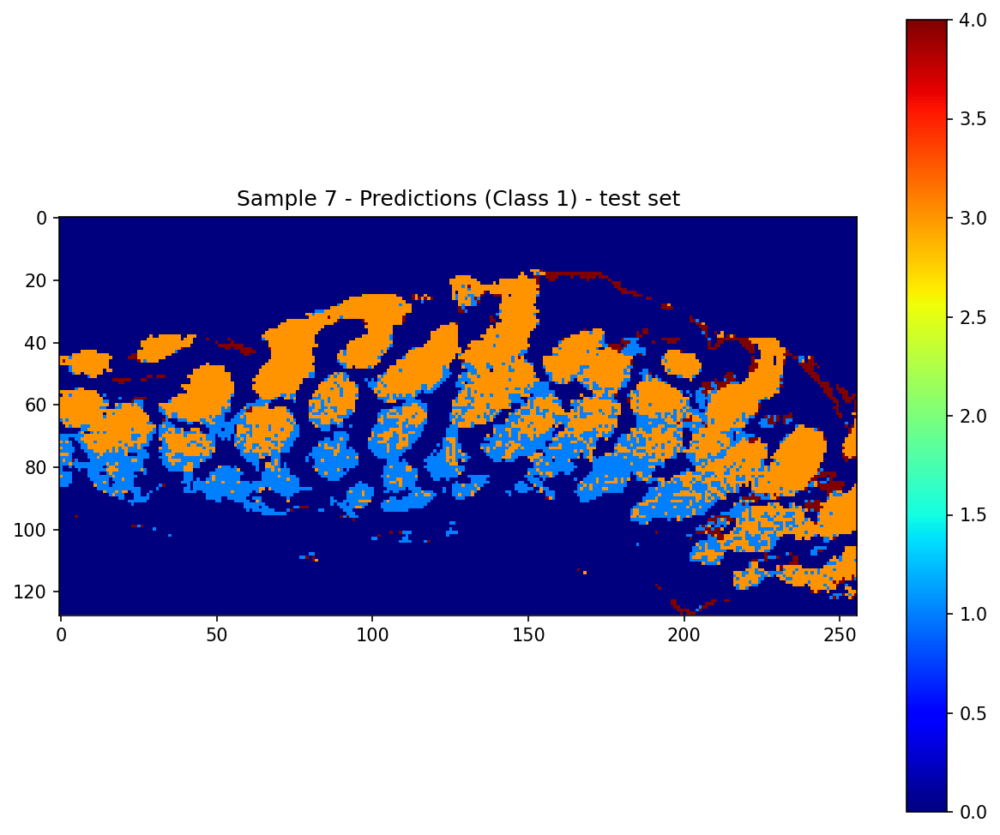

Overview
- Designing machine learning approaches for tumour identification and classification using Coherent Raman and mid‑IR spectrographs of 90 biopsy samples collected as part of an international collaboration.
- Removed vignetting on 600 GB of noisy Raman signal using Fourier masking.
- Implemented a multi‑scale CNN models with tanh activations to predominantly extract peak information in mid‑IR spectrographs of 801 wavelengths.
- Overcame batched classifications in the IR training dataset by applying detailed hyper‑parameter tuning, regu‑ larisation, defining custom metrics, and incorporating a voting mechanism based on validation set performance.
- Achieved pixel classifications which qualitatively match analysis of the biopsy using the gold‑standard method.
- Investigated explainability in this model by reducing LIME explanations to a latent space inside a VAE and then applying K‑means on this latent space to form explanation contexts.
- Differentiated spectral features in these contexts, such as CH2 resonance intensities and frequency shifts.
- Configured L40S and TitanXP GPUs for training in a remote Linux ssh environment.
- The numerical pipeline I have created for this project is available to view on GitHub.